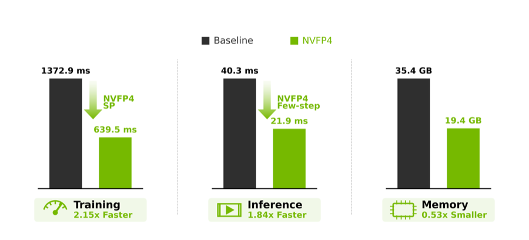
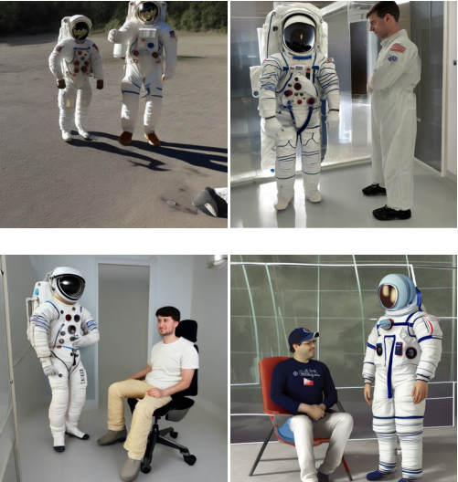
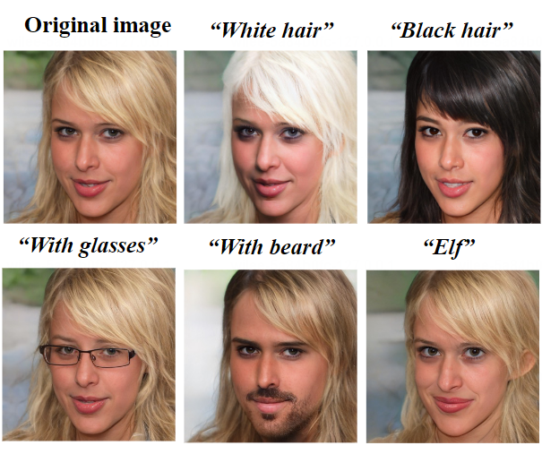

We released LongLive 2.0, an open-source NVFP4 parallel infrastructure for long-video generation, covering AR training, few-step distillation, multi-shot training and inference, SP acceleration, NVFP4 KV cache, and asynchronous VAE decoding.
PhD Student · Generative AI · Video Systems
Luozhou Wang (王罗州)
I am a fourth-year PhD student in Artificial Intelligence at HKUST(GZ), advised by Prof. Ying-Cong Chen. I work on controllable and efficient generative models, with a recent focus on long-video generation infrastructure. I am also collaborating closely with Yukang Chen on efficient training and inference systems for video generation.
News
We released the survey A Mechanistic View on Video Generation as World Models: State and Dynamics and its companion repository.
Scene Graph Guided Generation, which introduces the Scene Graph Adapter, was accepted to ICCV 2025.
The transparent video generation technology behind TransPixeler has been transferred into Adobe Firefly, enabling transparent-background video generation with foreground and alpha video exports.
TransPixeler was accepted to CVPR 2025.
Motion Inversion was accepted to SIGGRAPH 2025.
Text-Anchored Score Composition was accepted to ECCV 2024.
Selective Diffusion Distillation was accepted to ICCV 2023.
Research
My research interests center on controllable visual generation, video customization, transparent RGBA video generation, video world models, and practical systems for efficient long-video model training and deployment.
Selected Publications

New release
LongLive-2.0: An NVFP4 Parallel Infrastructure for Long Video Generation
arXiv, 2026 · * equal contribution
A 4-bit long-video generation infrastructure built around NVFP4 and parallelism, supporting the full path from training to deployment and reaching 45.7 FPS on LongLive-2.0-5B.
A Mechanistic View on Video Generation as World Models: State and Dynamics
arXiv, 2026 · * equal contribution
A survey that frames video generation as world modeling through state construction and dynamics modeling.
TransPixeler: Advancing Text-to-Video Generation with Transparency
CVPR, 2025
The transparent-background video generation technology behind this work has been transferred into Adobe Firefly, where creators can generate foreground videos with alpha-video exports for compositing.
Motion Inversion for Video Customization
SIGGRAPH, 2025 · * equal contribution

Scene Graph Guided Generation: Enable Accurate Relations Generation in Text-to-Image Models via Textural Rectification
ICCV, 2025 · * equal contribution
Introduces the Scene Graph Adapter, formerly SG-Adapter, to improve relation control in text-to-image generation.
Text-Anchored Score Composition: Tackling Condition Misalignment in Text-to-Image Diffusion Models
ECCV, 2024 · * equal contribution

Not All Steps are Created Equal: Selective Diffusion Distillation for Image Manipulation
ICCV, 2023 · * equal contribution